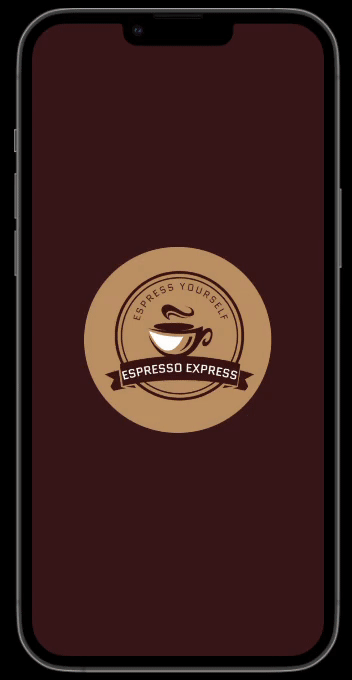

Welcome to EspressoExpress
EspressoExpress is a dynamic cafe app designed to enhance your coffee experience. Crafted with precision for iOS devices using Xcode, EspressoExpress offers an interactive menu with a delightful assortment of muffins, coffee, and cinnamon rolls. It allows you to browse and explore the cafe's offerings, helping you decide what treats to enjoy during your visit.
Download
Click the button below to download EspressoExpress and follow the instructions on the screen.
Download EspressoExpressFeatures
- Interactive Cafe Menu:
- Explore a diverse menu featuring muffins, coffee, and cinnamon rolls.
- Effortlessly browse through available items.
- Discover a wide selection of cafe treats.
- Swift and Objective-C Integration:
- Leverages the power of Swift and Objective-C.
- Provides a seamless and responsive iOS experience.
- Ensures efficient performance and functionality.
- Adaptive Layout:
- Responsive storyboards are employed for front-end development.
- Ensures EspressoExpress adapts seamlessly to different iOS device screens.
- User-Friendly Design:
- Embraces modern iOS design principles.
- Offers an intuitive interface for effortless menu exploration.
- Enhances your cafe experience with a visually appealing and easy-to-navigate interface.
